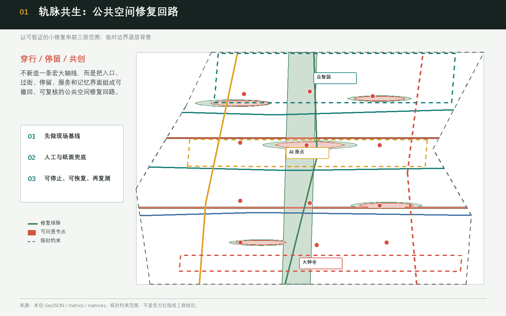
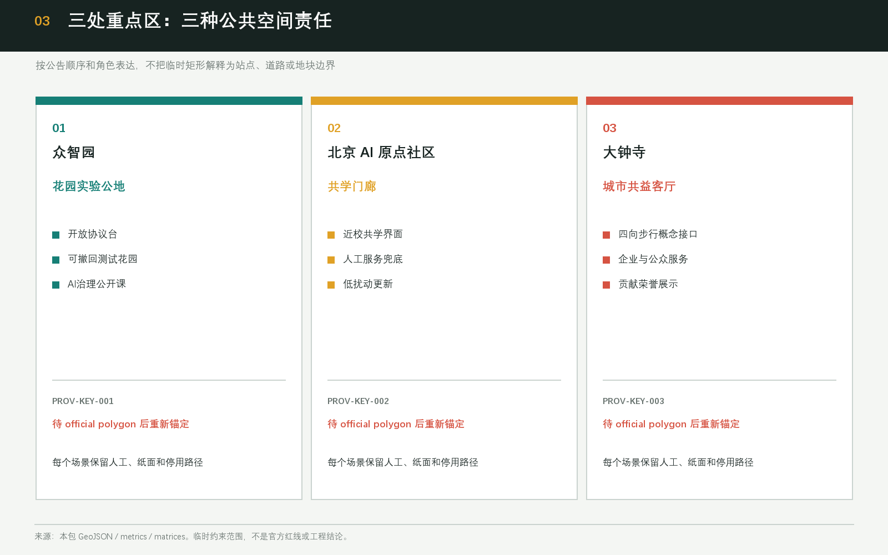
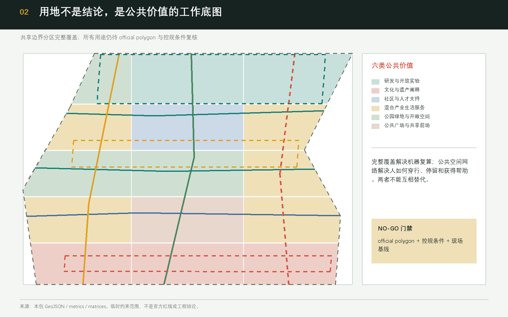
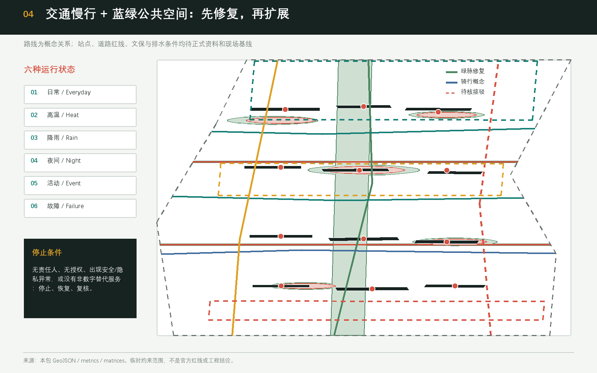
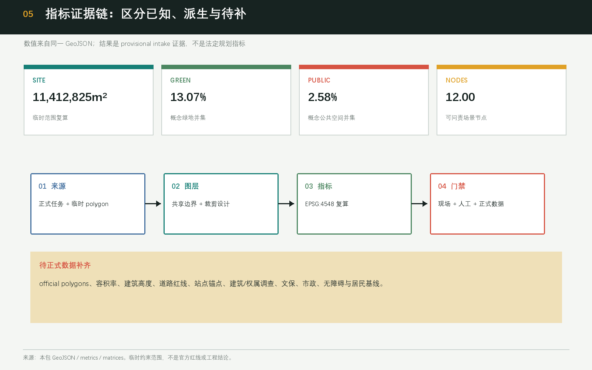

Haidian public-space revival
轨脉共生：海淀公共空间复兴
用可验证的小修复、清晰责任链和可撤回 AI 服务，把公共空间从方案配图变成可持续复核的城市基础设施。
当前 SITE 与三处重点区均为临时粗略 polygon。所有站点、道路、地块、文保和工程关系待正式数据及专业复核。
01
总览地图

临时边界以虚线降级；设计重点是修复回路、责任节点与停止条件。
设计判断
公共空间复兴不是一次性翻新，而是“发现缺口—小步试行—人工复核—恢复或扩展”的循环。
非数字兜底
纸面导览、人工服务台、现场工作人员和申诉渠道必须与 AI 服务同时存在。
02
三层范围
统筹研究范围
43.6 km² 公告约值；产业协同与案例机制层。总体设计范围
11.4 km² 公告约值；公共空间修复语法与城市更新层。重点区域范围
368.4 ha 公告约值；三个尺度无关的详细设计参考包。03
重点区域

04
用地分区

完整覆盖
15 个共享边界单元覆盖提交范围且无重叠，用地代码来自自然资源部分类子集。用途只是概念工作层。
建筑
12 个低置信度建筑界面用于讨论保留、改造和新建的判断流程，不代表现状测绘、权属或拆改决定。
05
交通慢行 + 蓝绿公共空间

06
AI 场景
| ID | 场景 | 运行方式 | 门禁/兜底 |
|---|---|---|---|
| TVS-01 | 开放数据回放台 | 公开数据 + 人工审批 | 无责任人即 NO-GO |
| TVS-02 | 低速机器人验证 | 围栏时段 + 人工接管 | 安全异常立即停用 |
| TVS-03 | 公共空间运维复核 | 人工巡查为准 | 不得替代公共安全判断 |
| SC-04 | AI 原点共学预约 | 人工门廊 + 纸面登记 | 无人工服务不启动 |
| SC-05 | 企业服务 Copilot | 公开目录 + 人工转介 | 无授权或复核即停用 |
| SC-06 | 健康服务导航 | 公开目录 + 人工转介 | 不采健康隐私 |
07
更新项目
| ID | 参考项目 | 责任主体建议 | 启动条件 |
|---|---|---|---|
| P0 | 公共空间基线台账 | 居民 + 无障碍参与者 + 运维人员 | 官方锚点与现场基线 |
| P1 | 可撤回入口修复包 | 公共空间运营伙伴 | 责任人、资源、恢复方案 |
| P2 | 共学门廊与人工服务台 | 社区/园区共治 | 非数字等价服务 |
| P3 | 测试花园 | 场景审查组 | 授权、速度/时段、停用阈值 |
| P4 | 京张记忆画廊 | 文化策展团队 | 文保与版权复核 |
| P5 | 共益账与贡献展示 | 独立公共利益复核 | 申诉和更正机制 |
| P6 | 热雨夜间运行包 | 运维 + 市政专业团队 | 季节数据和安全复测 |
| P7 | 三区两翼年度开放周 | 概念运营联盟 | 非政府承诺，逐年复盘 |
08
核心指标
EPSG:45481,141.28 ha临时 SITE 复算面积
GREEN13.07%概念绿地并集 / SITE
PUBLIC2.58%概念公共空间并集 / SITE
以上是设计几何复算值，不是官方面积或获批控规指标。

09
任务覆盖
17
公告必选任务
6
Agent 任务
15
设计深度项
10
自检状态
Geometry / PASS
Metrics / PASS
Bilingual pair / PASS
Field baseline / PENDING
11
证据层级
A0正式任务/标准
P临时空间约束
D可复算设计派生
U待正式数据补齐
GATE人工、现场与停用条件
12
来源
- 官方资格预审公告
- 清权 Agent 任务书摘录
- 住建部城市设计与控规文件
- 自然资源部用地分类指南
- 社区 Issues #846、#1029、#1061、#1081
13
假设
official polygon、控规、道路/站点、权属/建筑、文保、市政、无障碍和居民基线均待补齐。每项缺口都绑定重新锚定或重算动作。